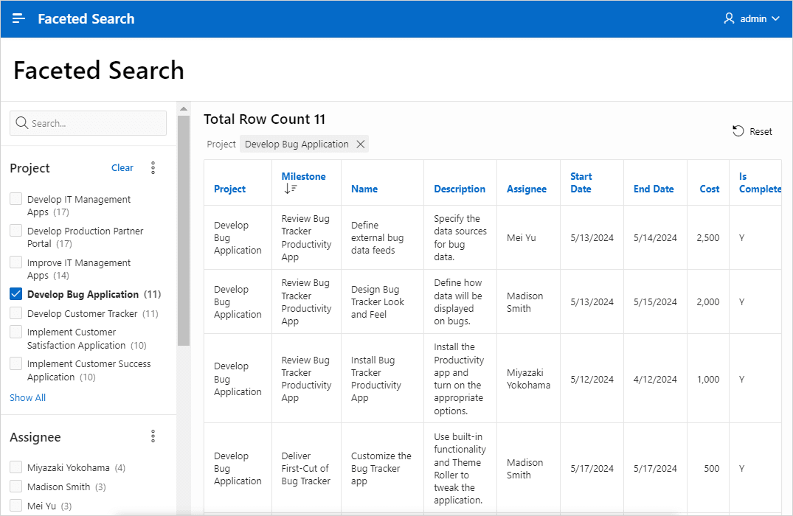
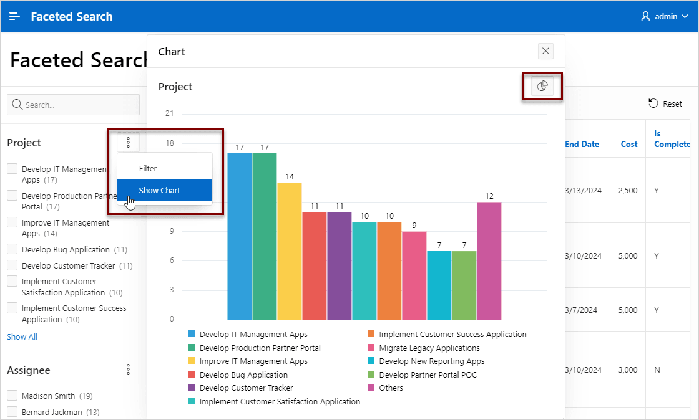

8.7.1 Example Faceted Search
View an example faceted search page.
A faceted search page features a faceted Search region and report. The Search region displays on the left side of the page and enables users to narrow down the search result by selecting facet values. Narrowing the search result, makes it easier for users to find the data they want. The right side of the page features a Search Results region which can display as a classic report or cards report.
The following shows a faceted search page built on the
EBA_PROJECT_TASKS table. In this example the Project,
Develop Bug Application, is selected and the report
displays 11 rows.

Description of the illustration faceted_search.png
By default, when you create a facet that computes counts with a wizard, each facet that computes counts includes a chart based on the facet counts. Clicking the three dots context menu on the facet and then Show Chart displays a chart based on the facet counts in a popup dialog. You can toggle between a bar chart or a pie chart by clicking the chart icon in the upper right of the popup window.

Description of the illustration faceted_search_charts.png
Tip:
To view an example, install the sample app, Sample Reporting. To learn more, see Installing Apps from the Gallery.
Parent topic: Managing Faceted Search